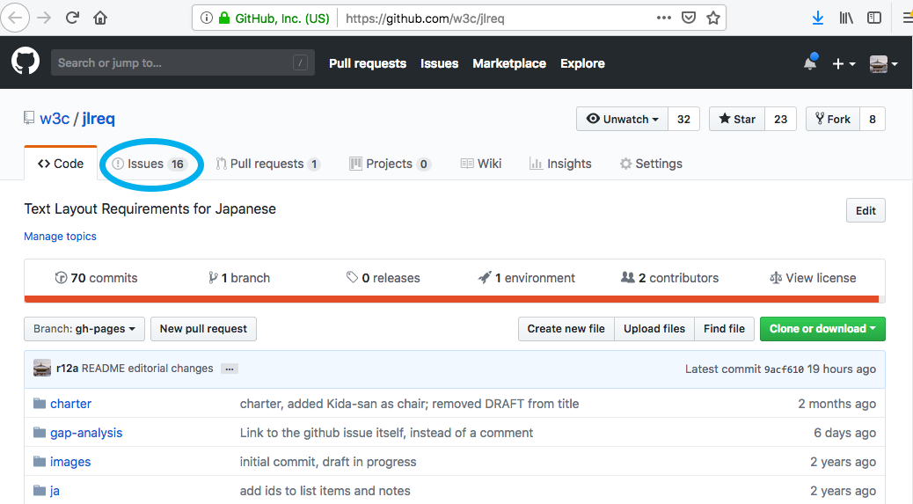
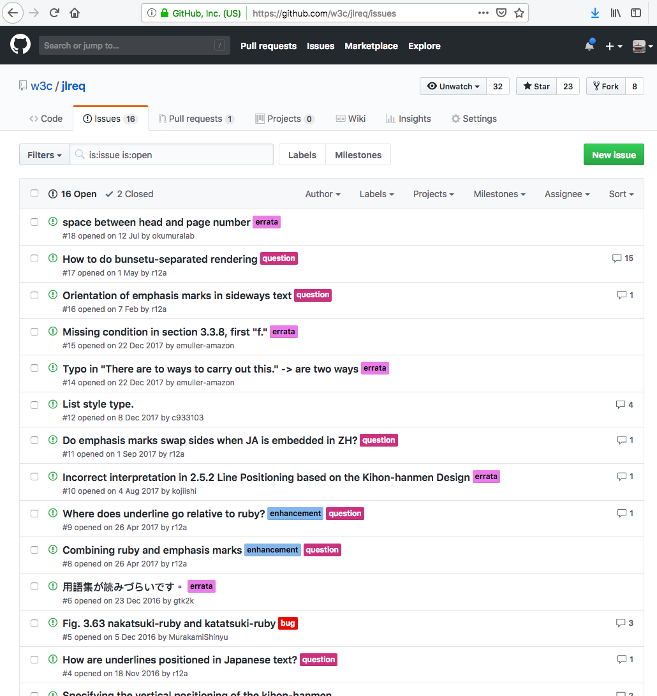
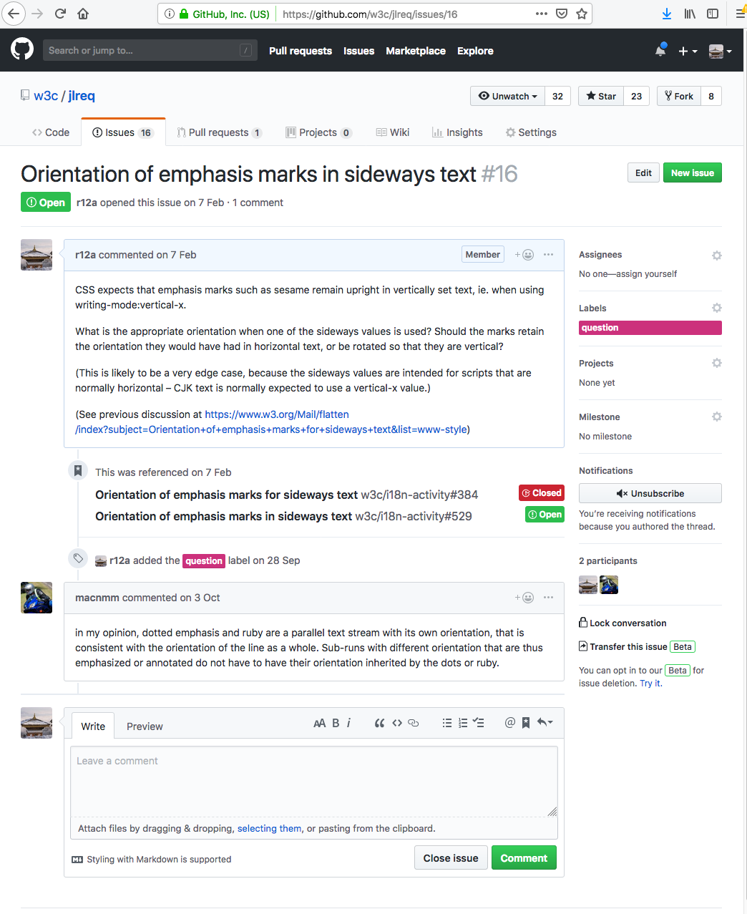
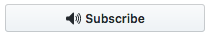
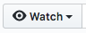
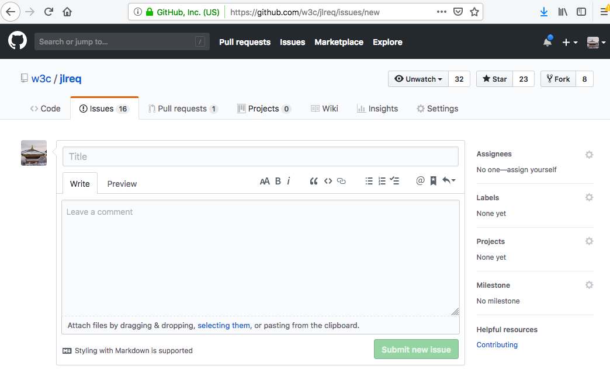

The W3C Internationalization Activity uses GitHub issues for technical discussions. This page provides an introduction to working with issues for those who are new to GitHub.
The first thing to say is that working with GitHub issues is very easy and intuitive! GitHub can occasionally involve complex behaviours when dealing with software or document change management, but there is nothing complex about working with GitHub issues.
Viewing issues
Each GitHub repository has a prominent link to a set of issues. The picture below shows the home page of the repository for the Japanese Layout task force. The blue circle shows where to click to get to the issue list.

After clicking on that tab, you will see a page like this, which lists all currently open issues. (Clicking on "2 Closed" will show any closed issues.)

The contents of the list can be filtered or ordered using the controls near the top of the page, if needed. You can view all open issues with a specific label by clicking on the label (eg. question).
Click on an issue title to view the thread. For example, here's what you'll see if you click on the 3rd title in the above list.

Adding comments to an issue
To add a comment to an issue, simply start typing into the box at the bottom of the thread (see the picture just above).
If you like, you can add markdown to the text or click on the icons to add formatting to your comment.
When you are done, check your comment using the Preview tab, and then simply click on the Comment button.
Note that GitHub will treat angle brackets in your comment as HTML markup, so if you want to include examples of source code, you should put reverse quote (`) characters around them.
Also, if you want to reply to a particular sentence or paragraph earlier in the thread, copy that to your comment and put a greater-than sign (>) at the beginning of the line. GitHub will then give that text a grey background.
You can experiment with the icons above the input box to discover other editing aids.
Following a discussion
If you contribute a comment to an issue, you will automatically be subscribed to that issue and will therefore receive email notifications as new comments are added.
If you haven't contributed a comment, GitHub provides the button (which notifies you of changes to this particular issue only), or the  button at the top of the page (which notifies you of changes to any issues in the repository, as well as pull requests).
You should, however, also consider subscribing to the mailing list for the repository you are following. That mailing list should be indicated in the explanatory text on the repository's home page. When subscribed to that list you will receive a (single) daily digest containing links to all issues in the repository that have changed over the past 24 hours. But the digests will also point you to related issues in other repositories too (such as CSS and HTML repos).
Creating a new issue
Anyone can raise a new issue. Simply click on the New issue button, add a short but meaningful title, and write your comment in the box provided.

Only people with administrative access are able to assign labels to an issue. They will be notified that you have created a new issue, and will decide which labels to assign to it.
Etiquette & tips
Please bear in mind the following:
-
Think over your comments before you write, and check them before submitting. Try to keep them as clear and succinct as possible.
-
Always keep to the topic of the thread. If there are other things you want to bring up, raise additional issues. The aim should be to keep each thread focused on a specific topic.
-
Always remain polite and constructive in your comments.
-
You can attract someone's attention, even if they are not following this issue, by including an @ sign followed by their github id, eg. "@r12a what do you think of this idea?".